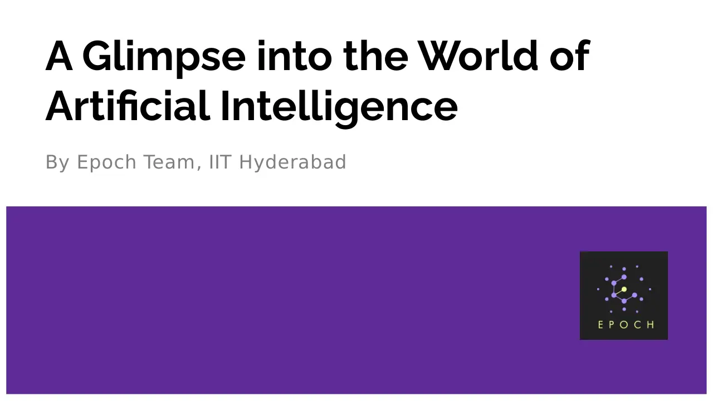

A brief introduction to all the domains in AI: computer vision, NLP, reinforcement learning and more.

Community session · Epoch, IIT Hyderabad · Aug 13, 2022
A brief introduction to all the domains in AI: computer vision, NLP, reinforcement learning and more.